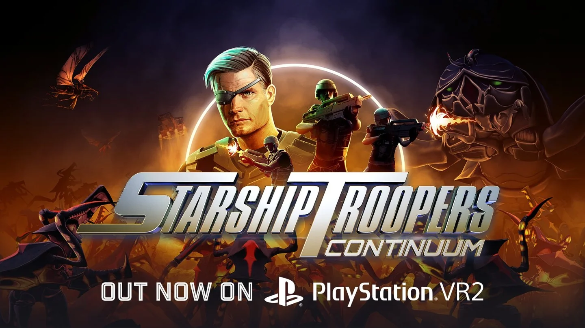

Backend setup
Backend setup supporting connected game systems.
Shipped commercial project · XR Games
Unity games programming across reusable packages, multiplayer features, connected systems and performance work.

Platform integration
I integrated and iterated on reusable save and social integration packages I had independently authored. The packages support Steam, Oculus and Sony platform integrations.
Multiplayer and services
Backend setup supporting connected game systems.
Multiplayer work, leaderboards and friend invites.
Platform compliance and submission support.
Loading and performance
I worked on asynchronous scene loading to reduce hitching and keep loading animations smooth. Profiling helped identify CPU and memory bottlenecks within VR frame budgets. I also worked on post-release bug fixes.
More work